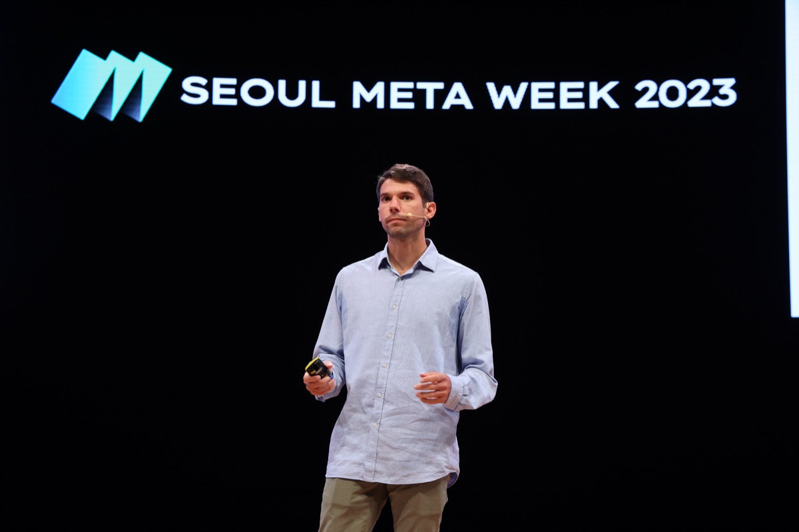
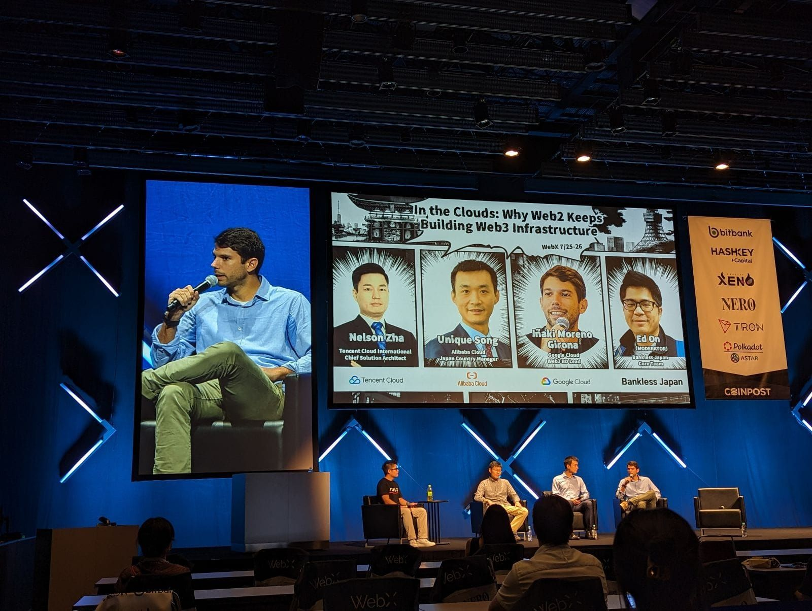
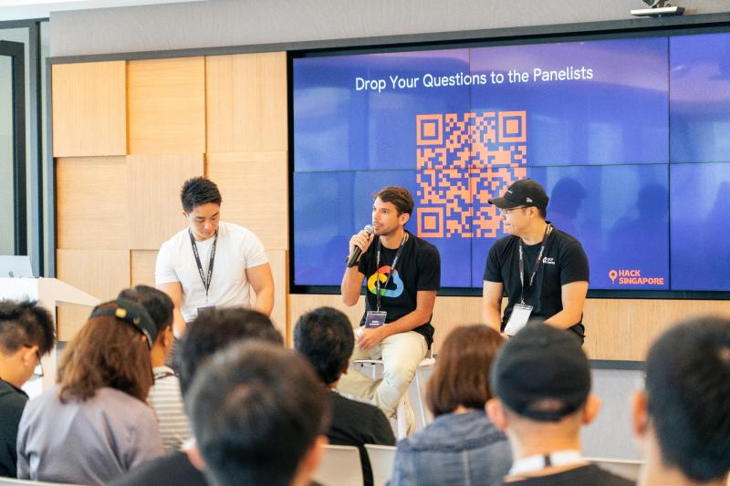

"People buy from people they trust. Everything else is noise."
My grandfather knew every customer by name - and what they needed before they asked.
"Iñaki, give them what they need, not what's expensive. They will always come back."

My family butcher business, founded in 1951. Grandparents, uncles. Moreno Antolinos Cansaladers, 2007.
"Hard work and effort are non-negotiable. Luck and talent - leave that to God."
My grandmother Angeles migrated to Catalonia and worked as a cook her whole life for a wealthy family. Never went to school - but no one could beat her at math or memory.
She was more than a cook - she helped raise their children. Years later, those kids (now grown up) would still come back every Christmas to thank her. Great work changes lives, regardless of your title.

With my grandparents and brother at home, 1995. Waiting for my parents to finish at the butcher shop.
Thanks to their sacrifice, I became the first generation to go to university. I'm in debt to them. I'm so lucky.
"No one is bigger than the team."
17 years at Club Esportiu Mercantil, a working-class club in Sabadell. Teammates who walked 15km to train. Some couldn't afford shoes. Some turned pro. Staff who gave everything "por amor al arte."
As captain, I learned: lead by example, put the team first, improve every day.


Left: 4 years old, first team. Right: Singapore, 2018 - still playing.
"Don't complain. Find a way."
Got assigned accounts nobody wanted - difficult quota, low potential. Instead of complaining, I paid for my own flights to find new opportunities. Became Google's Web3 expert. Finished as top 1% performer.



Seoul · Tokyo · Singapore
Left: me and my daughter, Singapore 2025. Right: my grandmother and me, Barcelona 1994, waiting to eat her macarrones con carne y cebolla.
"Why Anthropic?"
The first time I read Claude's constitution - helpful, honest, harmless - it took me straight back to working beside my grandfather in our family butcher shop. That was him: address what people truly need, never what costs most, because trust is what brings them back for life. I didn't expect to find that idea at the centre of a frontier AI lab - but it's there, and it's why I want to spend my career here.
Plenty of companies state safety as a core value. Anthropic actually organizes its foundation around it - through Constitutional AI, the Responsible Scaling Policy, and a commitment to never race past safety questions. That's the difference between stating a value and walking the talk. It's the exact reason I volunteer as a Master Trainer at AI Singapore, having trained 100+ people on responsible AI adoption for the greater good.
I'm proud of scaling the AI business at Google Cloud, but my ambition is to join the frontier lab igniting the race to the top on safety - somewhere building steerable, trustworthy AI isn't one division of a broader tech ecosystem, but the singular, defining mission of the entire company.
And I can build ASEAN. I've spent a decade doing this exact job - growing a greenfield territory to $12M+ ARR in under a year, closing deals up to $10M+, and winning workloads onto Claude over OpenAI. I sell Claude to founders and engineers, and I build with it daily (recently, 150 account decks in 45 minutes via an agentic workflow). I speak their language because I'm one of them. Singapore is home and the heart of ASEAN - and I'm fully ready to relocate to Sydney to build this market alongside the core team.
That thread runs from my grandfather's counter to Claude's constitution to my daughter's future: technology this powerful must be built honestly, and for the people who come after us. I've never felt anything more urgent than helping build AI the right way - carrying my grandparents' legacy forward by doing it.
"These values feel like home."
"High-trust, low-ego"
That's how my grandfather ran the butcher shop. Trust your people. Share credit. Fix problems, don't assign blame.
"Helpful, honest, harmless"
That's my grandmother, cooking for families who still came back 20 years later to thank her. Do the right thing even when no one is watching.
"No one is a bystander"
That's every teammate who walked 15km to train because they believed in something bigger than themselves.
I didn't learn these from a company handbook. I learned them at a butcher counter, in my grandmother's kitchen, on a football pitch in Sabadell.
Anthropic is building AI the way my grandparents built their lives: with care, with integrity, and for the people who come after.
Four generations of hard work brought me here. Now it's my turn - to pay it back, to build something that matters, and to make sure the next generation never forgets where they come from.
"Leave the jersey in a better place."
See the work →